Contact Us
Explore how Diya supports patient understanding wherever care happens
CareHub™ delivers multilingual content consistently and safely across the care journey
Embedded directly inside your EHR and Patient Portal
Health systems communicate with patients at many points of care
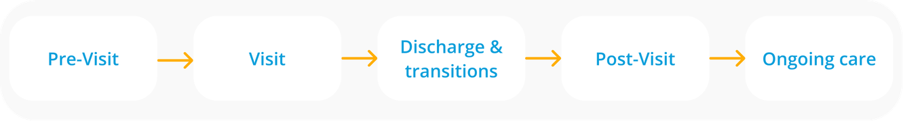
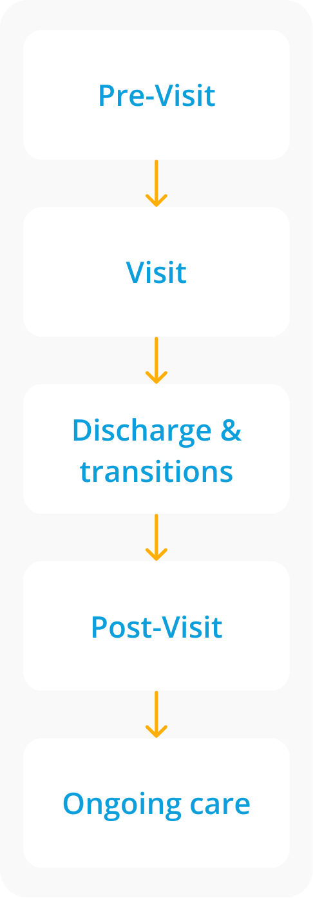
But, patient-facing content is often managed as disconnected assets
Content lives in silos across departments
Forms, education, & instructions are delivered separately
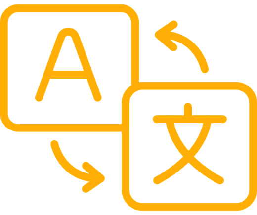
Translation is inconsistent or applied late
Patients receive information without context or continuity
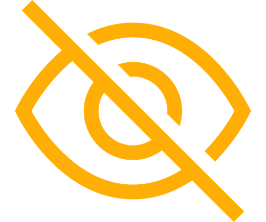
Teams lack visibility into what patients actually received
The result is not just inefficiency. It contributes to:
Low care plan adherence
Avoidable follow-up calls
Preventable readmissions
CareHub™
Augments EHRs and Patient Portals to create, manage, and reuse multilingual clinical content — supporting consistent meaning across encounters, settings, and languages
Structured Forms
Intake, consents, & assessments delivered in the patient's language
Patient Education
Condition-specific instructions & materials, translated with meaning preserved
Visit-Specific Guidance
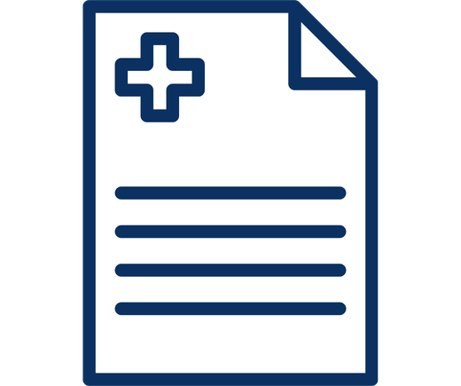
Logistics, summaries, & next steps tied to the encounter
Care
Packs
Curated bundles of forms, education, & follow-up aligned to care journeys
Embedded in clinical workflows
Governed for safety
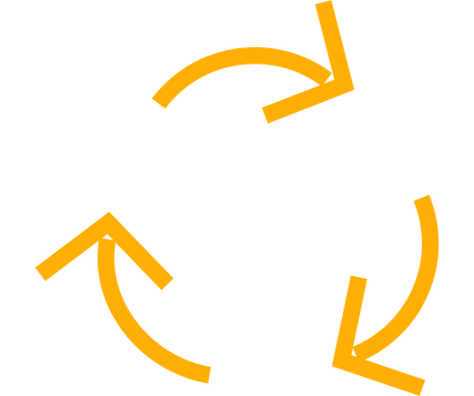
Built for care continuity
Standardize multilingual communication across the moments that most impact patient understanding
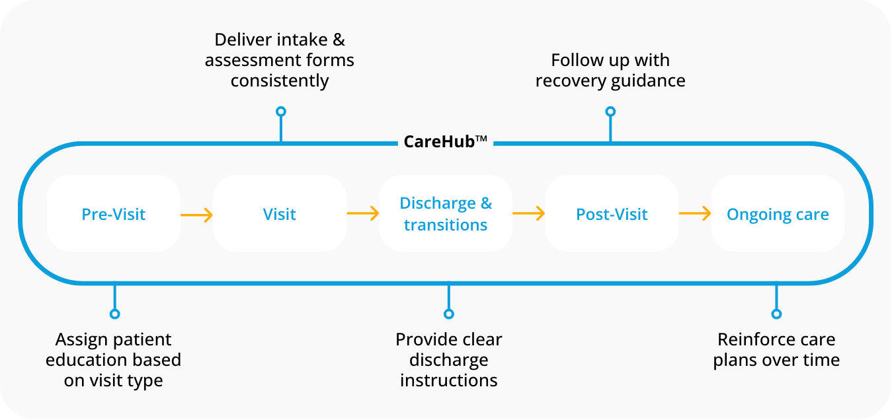
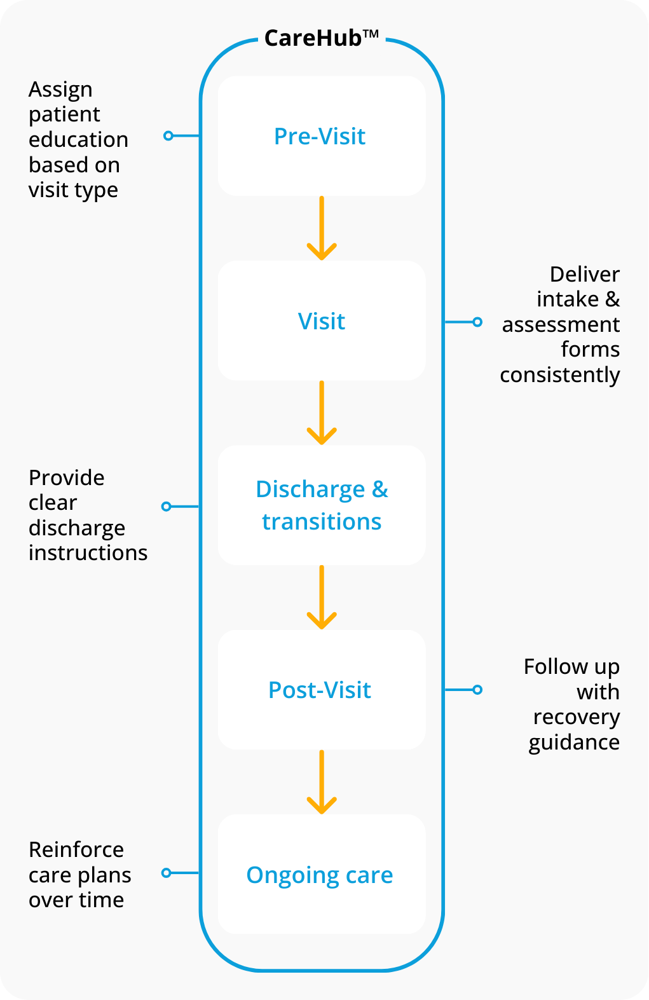
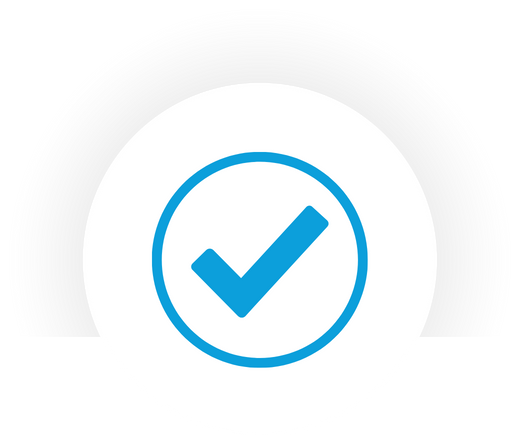
Reusable across sites. Measurable. Governed by Diya Safe AI™
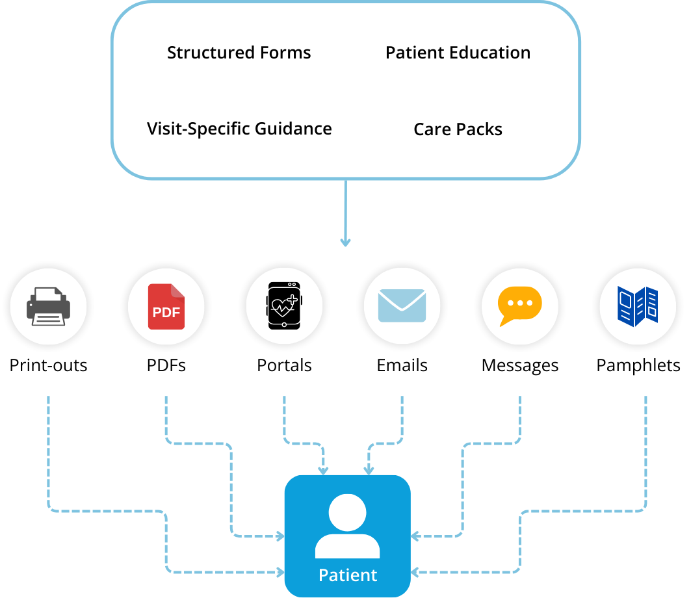
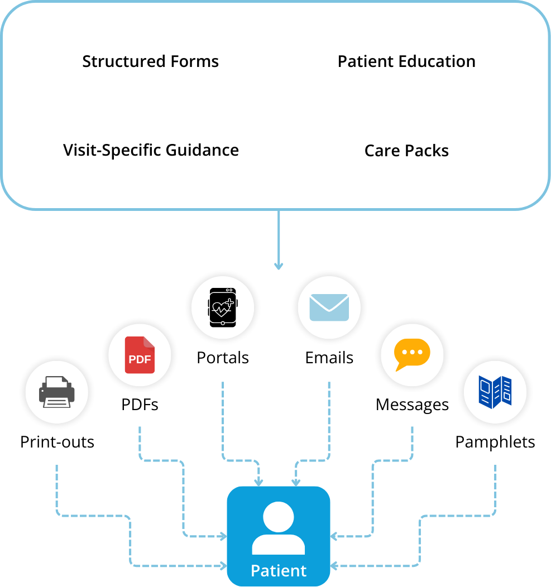
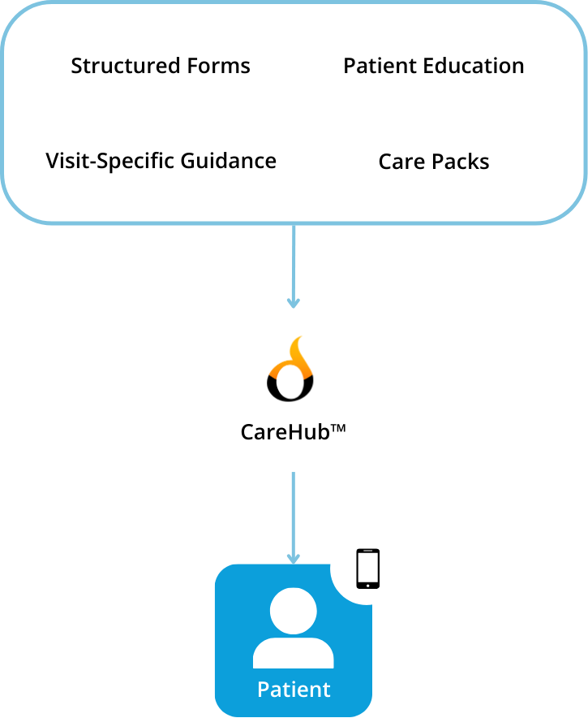
Supports patient communication at every stage of care
Works with existing EHRs & Patient Portals
Centralizes patient-facing content
Maintains consistency across languages
Healthcare-grade governance & security
Care often involves more than one person. CareHub™ securely enables shared understanding without introducing compliance risk
Ensuring patient-facing content is created, delivered, and monitored within healthcare-grade governance controls
The Diya Safe AI™ framework provides:
Auditability of content delivery
Monitoring & reporting
Secure handling of clinical & patient data
Alignment with healthcare privacy & governance standards
Many health systems begin with CareHub™ to:
Improve access to education for LEP patients
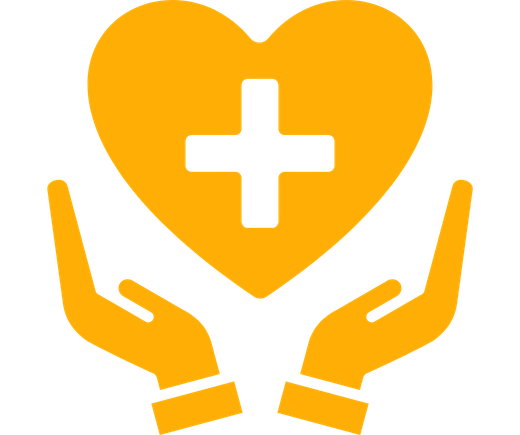
Reduce inequities in post-visit understanding
Strengthen communication during care
Over time, CareHub™ becomes the standard for how patient communication is delivered — for all patients, across all settings
See how coordinated, multilingual communication supports patient understanding across the care continuum
Explore how Diya supports patient understanding wherever care happens